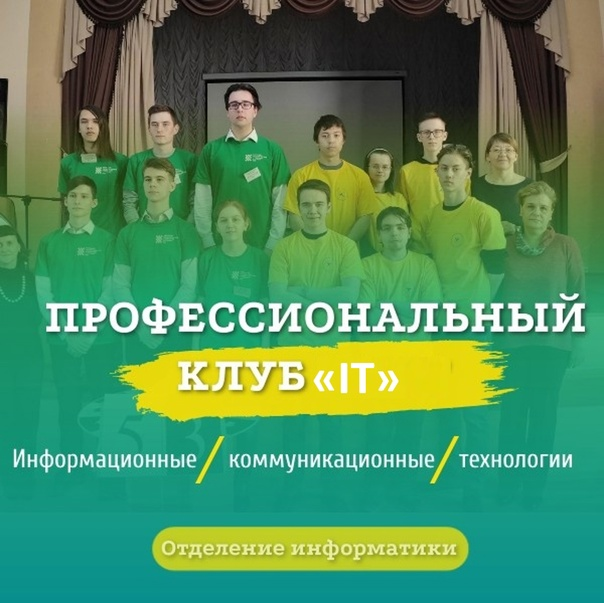
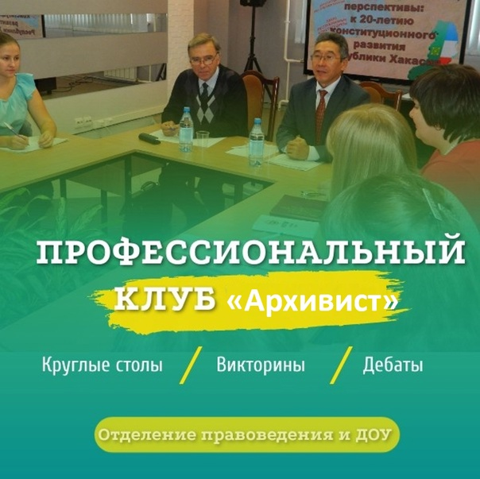

Добро пожаловать в захватывающий мир клубов колледжа, где студенты могут раскрыть свой потенциал, завести новых друзей и создать незабываемые воспоминания. Наши клубы предоставляют уникальные возможности для развития интересов, навыков, общения и участия в увлекательных мероприятиях.
Присоединившись к клубу колледжа, вы откроете для себя не только новые увлечения, но и уникальные возможности для личностного роста. Здесь каждый студент имеет шанс выразить свою индивидуальность и находит место, где его уважают и поддерживают.
Присоединяйтесь к нашим клубам, создавайте свою собственную историю колледжа и проживайте студенческую жизнь во всей ее красе!

Клуб "ЛАД"
Цель Клуба: Формирование профессиональной компетентности студентов школьного отделения; профессионально значимых
качеств личности, потребности в познании и самопознании,
ответственности, самостоятельности, креативности
Руководитель клуба: Ермак Анастасия Викторовна

Клуб «Дошкольник»
Цель Клуба: Создание условий для формирования активной позиции
личности студента и становления профессиональной компетентности будущего специалиста в области
дошкольного образования.
Руководитель клуба: Липина Ирина Анатольевна

Клуб «IT»
Цель Клуба: Формирование профессионально значимых качеств у студентов отделения информатики.
Руководитель клуба: Волвенкина Екатерина Сергеевна

Клуб «Юрист»
Цель Клуба: Создание дополнительных условий для формирования необходимых
профессиональных компетенций у студентов-правоведов.
Руководитель клуба: Федоров Александр Павлович

Клуб «Архивист».
Цель Клуба: Формирование профессионально значимых качеств у студентов,
обучающихся на специальности документационное обеспечение управления и архивоведение
Руководитель клуба: Ревенько Елена Александровна